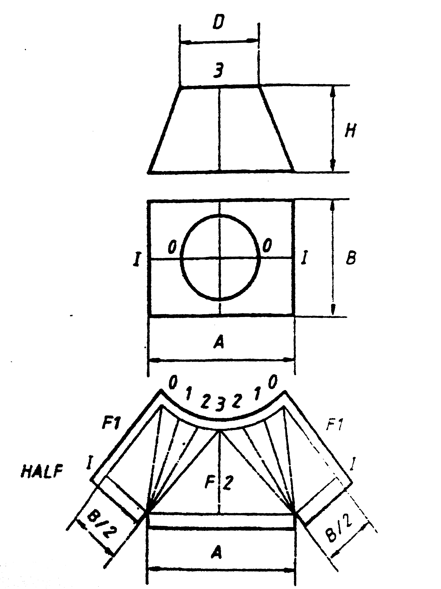

This application does not work properly without JavaScript enabled. Please enable it to continue.
Transformer Circle-Rectangle - Ubergang Kreis-Rechteck - Overgang Cirkel-Rechthoek - Prelaz Krug-Pravougaonik
